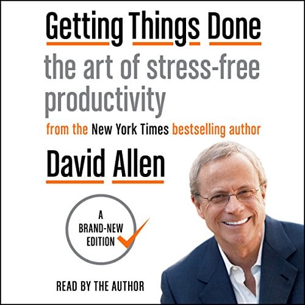

Library › Productivity
Getting Things Done — Summary & Key Lessons

The art of stress-free productivity — your mind is for having ideas, not holding them.
📖 OPEN THE FULL INTERACTIVE BREAKDOWN →🌐 Read it in Hindi, Hinglish, Gujarati, Tamil & 22 more languages — free, with audio.
💡 The Big Idea
Allen's insight, decades ahead of the burnout era: stress doesn't come from having too much to do — it comes from OPEN LOOPS: the hundreds of un-clarified commitments ('mom's birthday... the leaking tap... that email') that your brain keeps re-presenting at 3 a.m. because it doesn't trust any external system to remember them. GTD is that trustworthy system: CAPTURE everything into inboxes (nothing lives in your head), CLARIFY each item (is it actionable? what's the very next physical action?), ORGANIZE by context (calendar for date-fixed, Next Actions lists, Waiting For, Projects, Someday/Maybe), REFLECT via the sacred Weekly Review, and ENGAGE with intuitive confidence. The prize is 'mind like water' — total presence, because everything else is safely parked.
🧠 The 6 Key Lessons
Lesson 1: Open Loops & the Capture Habit
Chapters 1–2, 5: The Art / Getting Control / Collection
Every commitment you've made — to others or yourself — that lacks a decided outcome and next action is an OPEN LOOP, and your brain tracks all of them badly but insistently: the psychic RAM fills, attention fragments, and the 3 a.m. replays begin (crucially, the brain reminds you at the WRONG times — the tap leak surfaces in a meeting, never at the hardware store). The fix's first half is CAPTURE: get 100% of the loops out of your head into trusted buckets — as few inboxes as you can manage (one physical tray, one digital note, one email inbox), captured immediately, emptied regularly. Allen's initial 'mind sweep' is the initiation rite: 1–6 hours listing EVERYTHING (career doubts included) — most people surface 100–300 items and describe the sensation identically: exhaustion, then a strange, specific lightness. The rule forever after: if it crosses your mind twice, it belongs in the system, not in you.
📖 Example: Allen's consulting scenes repeat the same drama: senior executives — outwardly organized — producing 150+ open loops in the initial sweep, from 'restructure division' to 'buy batteries,' each loop paying rent in background anxiety. His martial-arts frame… Read the full example →
⚡ Do this: Do the mind sweep this weekend: 90 minutes minimum, list every open loop (use trigger lists: house, health, career, family, finances, promises). Then establish your capture points — one note app, one tray — and the twice-crossed rule: any recurring thought gets written, instantly, forever.
Lesson 2: The Clarify Machine: What IS It, and What's the Next Action?
Chapters 6–7: Processing / Organizing
Captured stuff is still stuff until CLARIFIED through Allen's decision tree, item by item, never re-shuffled: What is it? Is it ACTIONABLE? If NO → trash, someday/maybe, or reference. If YES → what's the NEXT PHYSICAL ACTION (not 'plan mom's party' — that's a project; the next action is 'call Priya for caterer's number': visible, physical, doable). Then the routing rules: under TWO MINUTES → do it NOW (filing it costs more than finishing it); yours but longer → defer to Next Actions list or calendar (calendar ONLY for date/time-fixed items — the daily to-do list dies here; a calendar polluted with 'shoulds' teaches you to ignore it); someone else's → delegate and log on WAITING FOR (the list that ends 'I thought YOU had it'). Anything requiring more than one action becomes a PROJECT on the Projects list — reviewed weekly so every project always has a live next action. The magic is granularity: procrastination, Allen shows, is usually un-decided next actions wearing task costumes.
📖 Example: Allen's favorite demonstration: the item 'car' on someone's list — festering for weeks — decomposed live: what about the car? Service due. What's the next action? 'Google the service center's number'... which takes ninety seconds and could have been done the… Read the full example →
⚡ Do this: Process one full inbox today with the tree: every item gets a verdict (trash/reference/someday, do-now, defer, delegate) and every actionable gets a physical NEXT ACTION verb. Enforce two-minute-do-now ruthlessly. Feel the difference between 'organized' and 'decided.'
Lesson 3: Contexts, Calendar & the Sacred Weekly Review
Chapters 8–9: Reviewing / Doing
Organization GTD-style is retrieval-optimized: Next Actions sorted by CONTEXT (@calls, @computer, @errands, @home — because what you CAN do depends on where you are and what tool's in hand), the calendar kept sacred (only true landscape: appointments, day-specific actions — 'if it's on the calendar, it happens'), Waiting For reviewed so delegation doesn't decay, and Someday/Maybe capturing ambitions without cluttering the runway. The system's heartbeat — and Allen is adamant it's non-negotiable — is the WEEKLY REVIEW: 60–90 minutes where you empty all inboxes, review every list, update projects (each gets a next action), scan the calendar backward and forward, and sweep the mind fresh. Skip it and the system rots within two weeks (untrusted lists get abandoned; the loops move back into your head); keep it and Allen's promise holds: you can feel genuinely relaxed about everything you're NOT doing, because you know exactly what it is and that it's parked on purpose.
📖 Example: Allen's practitioner data point: ask lapsed GTD users what broke, and the answer is uniform — the Weekly Review died first, then trust, then the whole system. His high-performer observation runs opposite: the executives who guard Friday-afternoon review… Read the full example →
⚡ Do this: Book the Weekly Review as a recurring calendar block NOW (Friday 4 p.m. or Sunday evening work best) — checklist: inboxes to zero, every project has a next action, calendar ±2 weeks scanned, Waiting For chased, mind swept. Protect it for four consecutive weeks before judging the system.
Lesson 4: Mind Like Water: The Horizons and the Two-Minute Life
Chapters 2, 10–13: Vertical Focus / The Power of the Habits
GTD's ground game (runway: next actions) connects upward through Allen's HORIZONS: projects (10,000 ft) → areas of responsibility (20,000) → 1–2 year goals (30,000) → 3–5 year vision (40,000) → life purpose (50,000) — and the counterintuitive doctrine: work BOTTOM-UP, because nobody can think about life purpose with 300 open loops screaming; runway control CREATES the headspace for altitude. The closing psychology explains the system's grip: Allen's three master habits — capture everything (the open-loop antidote), decide next actions (the procrastination antidote), and outcome focus (every project defined by 'what does done look like?') — together produce what he calls appropriate engagement: fully present in THIS meeting, THIS conversation, THIS rest, because everything else is provably handled. The deepest pitch isn't productivity at all: it's that psychological freedom — the parent actually watching the school play — is an achievable engineering outcome, not a personality trait.
📖 Example: Allen's karate metaphor completes the arc: the black belt's power comes not from tension but from RELAXED readiness — and his executive case studies land the same testimony from the corner office: 'I finally understood,' one CEO reports after months on the… Read the full example →
⚡ Do this: Do horizons bottom-up: once your runway and Weekly Review have run for a month, book one hour at 30,000 ft — list your 1–2 year goals and check every current project against them (orphan projects get killed; orphan goals get projects). And install the master habit tonight: 'what does DONE look like?' written atop every project you own.
Lesson 5: Projects vs. Next Actions: The Thinking That Saves Your Brain
Part 2: Getting Projects Under Control
The single most powerful GTD distinction: a 'project' is an outcome with more than one step, and it lives in your head as a vague cloud of anxiety until you define its NEXT physical action. 'Plan the vacation' is a cloud; 'call the hotel to check dates' is a next action. Allen's rule: if it takes more than two minutes or more than one step, it's a project — write it on a projects list, then attach the very next concrete action to it. Your brain is terrible at holding projects and brilliant at holding one action. The moment a project gets a next action, its weight lifts from your mind.
📖 Example: Allen describes how 'clean the garage' paralyses people for months because it is a project presented as a task. The person who writes 'walk to the garage and move the boxes from the left wall' starts moving within minutes — the project only ever gets done… Read the full example →
⚡ Do this: Take your three most nagging 'should-dos' and convert each into ONE physical next action you could do in under 10 minutes. Do one of them today.
Lesson 6: The Waiting For List: Track What Others Must Deliver
Part 3: Organizing — The Buckets
GTD's most underrated list is 'Waiting For': everything you have delegated, asked for, or that depends on someone else. The reason it matters: your brain keeps a background thread running on every open loop, and loops you can't act on are the most distracting kind. By writing 'waiting for: invoice from Sharma', you give your mind permission to drop it — and you create a trigger for the weekly review to chase it. The Waiting For list also reveals the truth about how much of your productivity depends on others, and it makes you the person who always follows up — which is a superpower.
📖 Example: Allen tells of managers whose stress dropped sharply the moment they started a Waiting For list: the emails they'd mentally tracked for weeks became a simple Friday scan. Their teams also started respecting them more, because every open commitment got chased. Read the full example →
⚡ Do this: Start a 'Waiting For' list today — every pending request, order, reply or promise from others. Review it every Friday and send exactly one follow-up per item.
✅ 5-Step Action Plan
- Do the full mind sweep; establish minimal capture points.
- Process every inbox with the tree: next-action verbs, two-minute rule.
- Sort actions by context; keep the calendar sacred.
- Book and protect the Weekly Review for four weeks.
- Then climb the horizons bottom-up — kill orphan projects.
⚠️ When This Doesn't Work
GTD's elegant system can become the thing itself — a perfectly organised inbox and zero shipped work. Katerra was the most organised construction company in America: world-class systems, processes, project management — and it collapsed with billions lost, because systems managed the process while the fundamentals (unit economics, real demand) went unexamined. A system that makes busywork feel productive is worse than no system. Capture, clarify, organise — then ask what actually got built.
💀 The Graveyard Proves It
🏗️ Katerra — $3B to 'Disrupt Construction' — Bankrupt Anyway. Burn: $3B — SoftBank's construction bonfire. Read the full case study →
💬 Best Quotes from Getting Things Done
- “Your mind is for having ideas, not holding them.”
- “If it takes less than two minutes, do it now.”
- “You can only feel good about what you're not doing when you know what you're not doing.”
Interactive version: mark lessons as read, listen in your language, share quote cards.